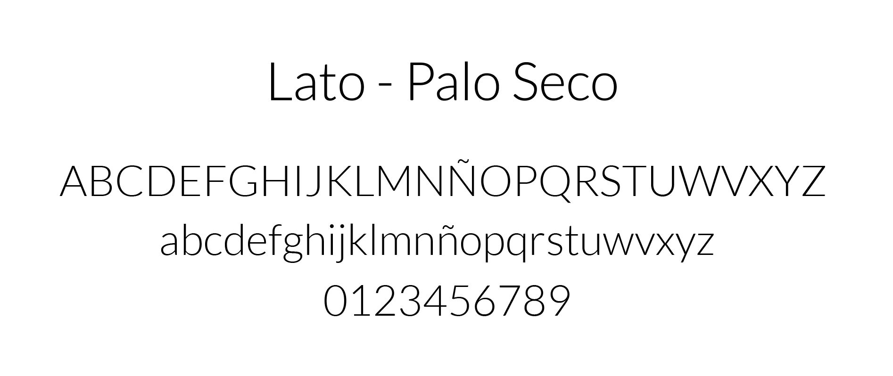

Tipografías Utilizadas
Para el desarrollo de la landing page se utilizó 1 familia tipográfica. Su nombre es Lato. Es una familia palo seco elegante. Se considera que tiene un alto nivel de lecturabilidad y legibilidad por lo que se consideró pertinente utilizarla a nivel general para la landing page. En cuanto a historia, fue diseñada por Lukasz Dziedzic, lanzada en 2015. El nombre "Lato" es en polaco "verano".
